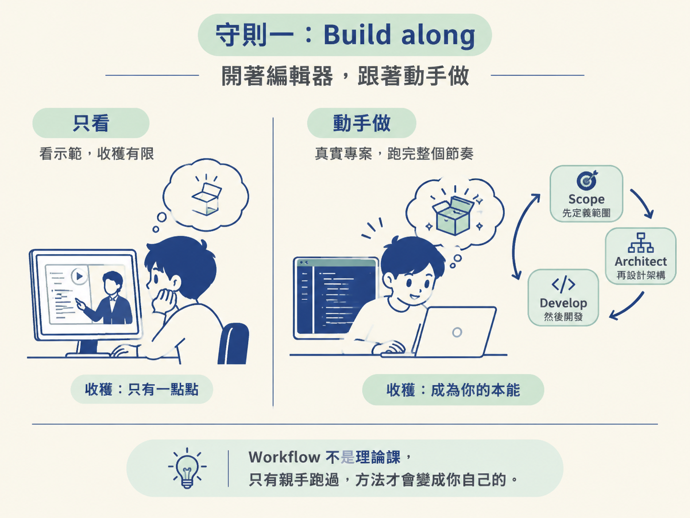
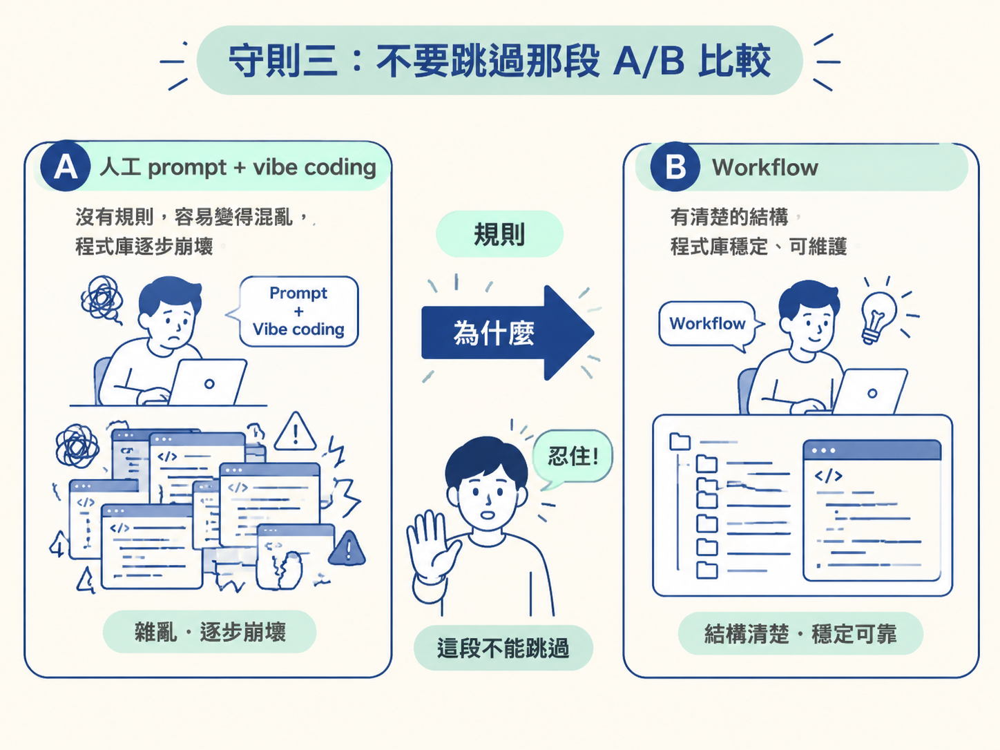
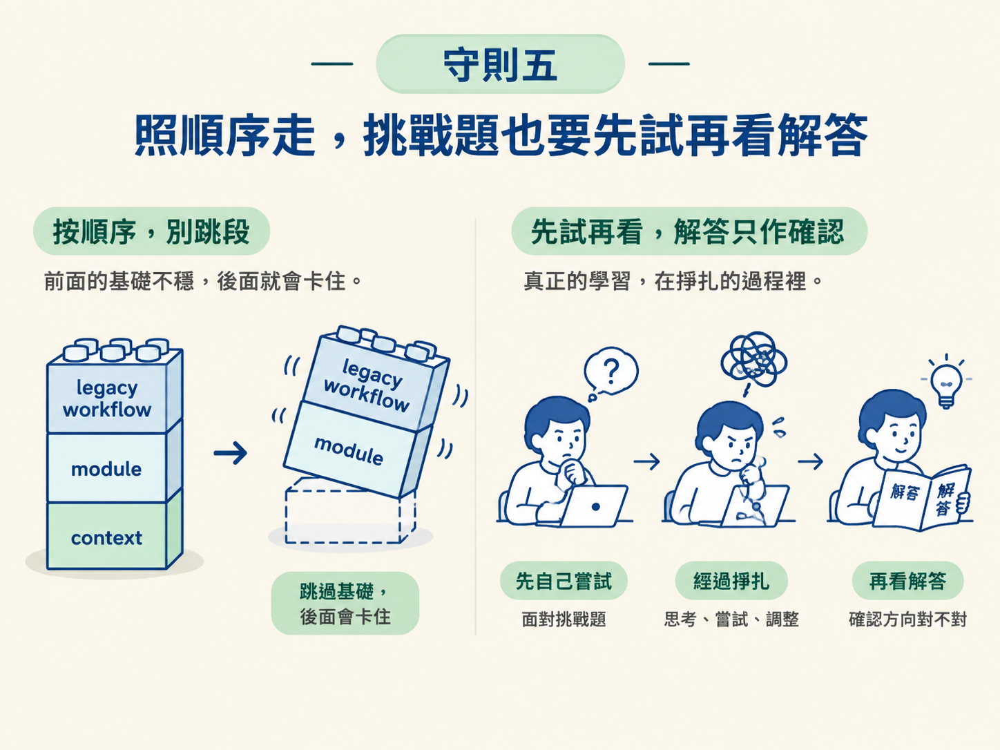

能說出並執行這門課的五條學習守則：邊做邊學、知道課程的形狀、不要跳過比較模組、自己動手填速查表、照順序走，並說明每一條背後的道理。
環境已經裝好，方向也確認了。這一節不教你任何工具操作，只交代一件事：這門課接下來幾十個小時，你要用什麼方式消費它。守則本身很短，但每一條都會直接影響你最後的收穫，所以值得在動手前先講清楚。
有件事會決定你最後是「真的會用這套 workflow」，還是「看完覺得很有道理、過兩週忘光」。差別往往不在聰明程度，而在你怎麼消費這門課。講師在正式開始前，把這件事單獨拉出來講，因為它直接決定你這幾十個小時會不會白費。
他把訣竅收斂成五條守則。它們大多不是什麼新奇的學習理論，而是針對「這是 workflow 課、不是理論課」這個特性設計的：方法要落在手上，而不是停在耳朵裡。以下一條一條講，順序就是講師原本的順序。
第一條也是最重要的一條：跟著一起做。講師說得很重：這是一門 workflow 課，不是理論課，而一套 workflow 只有在你的手親自跑過之後，才會變成你的。光看示範，價值大概只有自己動手做的十分之一。所以請你整個過程都把編輯器開著，看到操作就跟著操作。
這條守則的道理在於：workflow 是一連串肌肉記憶與判斷的組合，它不像名詞定義那樣聽過就記得。你必須真的在專案裡走過一次「先 scope、再 architect、然後 develop」的節奏，那份節奏才會內建成你之後的本能。

第二條是先看清楚整張地圖，這樣你隨時知道自己站在哪裡。課程的形狀大致是這樣：先講 fundamentals：agent 在底層究竟是怎麼運作的，以及該怎麼思考 context。這一段是工具無關的，也是後面所有東西賴以站立的地基。
接著，講師會刻意帶你看一段用 vibe coding（或你想怎麼稱呼它都行）、完全沒有用任何 skill 做出來的成品，目的是讓你真切感受到那種做法到底痛在哪。然後他才端出 JSM workflow，而其中每一個 skill，都會落成你剛好感受到的那個痛點的解法。最後，他拿這套 workflow 去跑真實場景：一個從零開始的專案、一個 legacy 程式庫，以及當一切都崩壞時該怎麼辦。先知道這個形狀，你就會知道每一段為什麼存在，而不是被動地一段接一段看。
第三條是一個很具體的警告：不要跳過「用人工 prompt 與 vibe coding 寫出來的程式庫」和「用 workflow 寫出來的程式庫」兩者對照的那一段。講師知道你的本能是趕快跳進那套很炫的 workflow，但他請你忍住。因為那段比較，正是讓後面所有內容「啪」一聲接上的關鍵。
為什麼會有這種效果？因為抽象的 workflow 步驟，看起來都很有道理、卻也很難記住；只有當你先看過「沒 workflow 會爛成什麼樣」，再對照「有 workflow 差在哪裡」，你才會真正理解每個步驟存在的理由。那段對照，是把「規則」翻譯成「為什麼」的地方。

第四條講的是課程附的一份速查表。它一開始是刻意留白的，不是因為內容還沒做好，而是因為你要自己把它填滿。做法是：隨著課程推進，每遇到一個 skill，就用你自己的話記下兩件事：它做什麼、以及你什麼時候會伸手拿它。講師會在每次該加一行時提醒你。
他背後的原則是：自己寫下來的東西會留下，下載來的東西不會。所以課程最後雖然會解鎖一份官方的一頁式速查表，讓你可以對照自己寫的版本，但講師老實說，到那個時候你大概已經不太需要它了，因為你親手寫過的那份，才是真的長在你腦子裡的。這條守則和守則一是同一個精神，只是練的是記憶而不是操作。
第五條是照順序走。講師知道，你買這門課很可能就是為了 workflow 的實作、或那些 legacy 的模組，所以他特別叮嚀：不要直接跳過去。原因是每一個模組都靠著前一個模組的內容在運作，尤其 legacy workflow 如果少了底下的 context 層，會變成「半殘」的狀態，讓你默默被卡住卻說不出哪裡不對。
同樣的規則也適用於挑戰題：每一題都要先自己嘗試，才去看解答。因為真正的學習發生在掙扎的過程裡，解答只是替你確認方向對不對。先看解答，等於把最有價值的那段練習直接跳過了。

把五條守則攤開來，它們其實是同一件事的五種面向：把方法留在手上，而不是留在筆記裡：
五條守則決定了你最後是「學會」還是「看過」。一，Build along：開著編輯器跟著做，只看示範只有動手做的十分之一價值。二，知道課程的形狀：fundamentals → 一段沒有 skill 的痛 → JSM workflow（每個 skill 對應一個你剛感受過的痛）→ 真實場景。三，別跳過 A/B 比較，它是讓後面全部接上的關鍵。四，速查表自己填，自己寫的才會留下。五，照順序走，挑戰題先試再看解答，因為掙扎本身就是課。把這五條放在心裡，暖身就結束了。
做完這一節，你手上應該有兩樣東西：一份還是空白的速查表，以及一份把五條守則講得出來的腦袋。這門課的暖身到此結束。接下來真正要面對的是那個讓人頭疼的問題：AI 寫程式為什麼會崩壞，而我們到底該拿它怎麼辦。那會是下一個節點「Agentic Mindset」的起點。